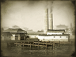

Requires
- Arts:

Enables
- Buildings: 


- Arts:
Effects
- -14% to the cost of foreign veteran actions
- +1 to modernisation (clan development)
- +7% to the chances of successful foreign veteran actions
- Foreign powers will seek to establish a military mission (requires trading port)
Description
As the storm rages
He whispers all his secrets.
The old carp is wise.
Wars are not conducted solely on the battlefield. Wars do happen without being openly declared. Wars are fought with words and ideas, even between apparent friends, because all nations wish to be pre-eminent. The strong fight as they choose. The weak fight as they may, and sometimes profess peace to hide their struggles.